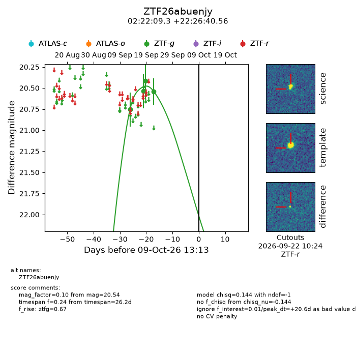
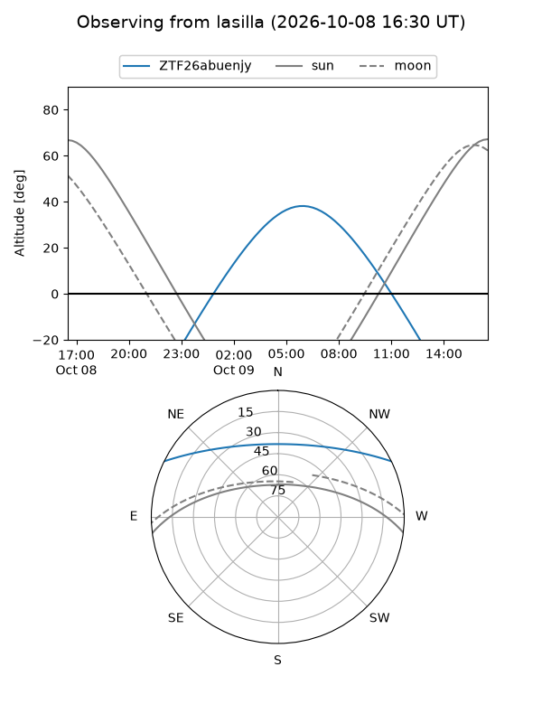
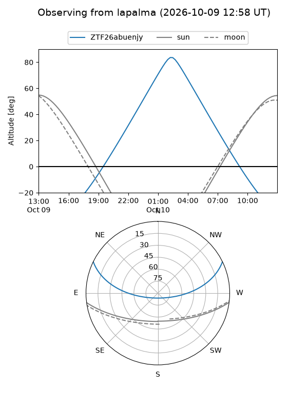
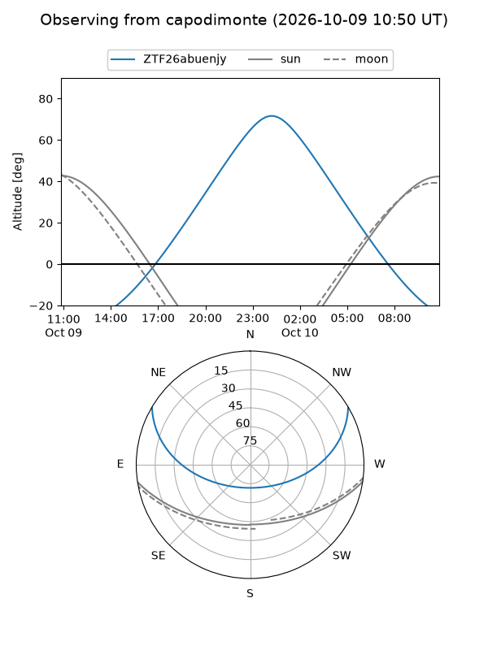
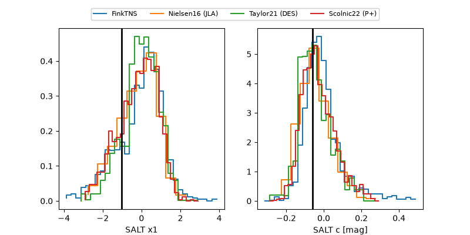

ZTF26abuenjy
Target ZTF26abuenjy at 2026-10-09 13:15
Aliases and brokers:
FINK-ZTF: ztf.fink-portal.org/ZTF26abuenjy
Lasair-ZTF: lasair-ztf.lsst.ac.uk/objects/ZTF26abuenjy
ALeRCE-ZTF: alerce.online/object/ZTF26abuenjy
Direct TNS query: direct search
alt names
ZTF26abuenjy (ztf,fink_ztf)
Coordinates:
equatorial (ra, dec) = 35.5386,+22.44460
equatorial (HMS+DMS) = 02:22:09.27,+22:26:40.56
galactic (l, b) = (148.9941,-35.79439)
Flags:
peak dt: +20.6
Photometry:
last ztfg=20.54
4 ztfg detections
Lightcurve

Visibility



Additional plots
